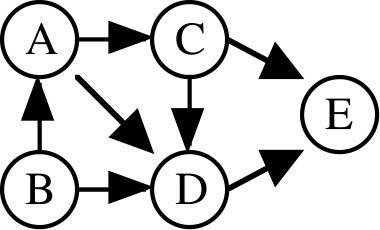

Representing Graphs
Graphs are basically dictionaries with keys as nodes and values as the connected nodes.
Directed Graph can also be reprented as class. With common graph operations as methods
Directed Graph

H = {'A': ['C','D'],
'B': ['A','D'],
'C': ['D','E'],
'D': ['E'],
'E': []
}
Weighted Graph

W = {'A':{'C':2,'D':6},
'B':{'A':3,'D':8},
'C':{'E':5,'D':7},
'D':{'E':-2},
'E':{}
}
Graph Class
class Graph:
def __init__(self, g):
self.g = g
def V(self):
return list(self.g.keys())
def Adj(self, v):
return list(self.g[v].keys())
def W(self, v, u):
return self.g[v][u]